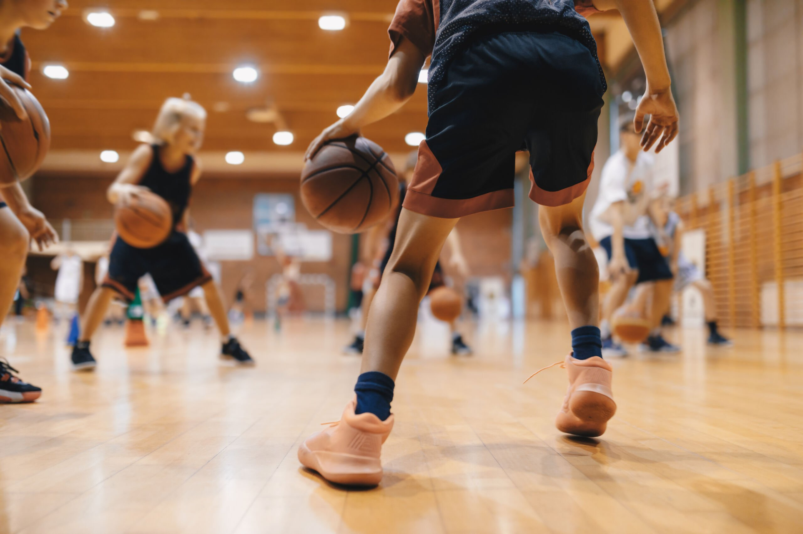
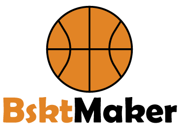
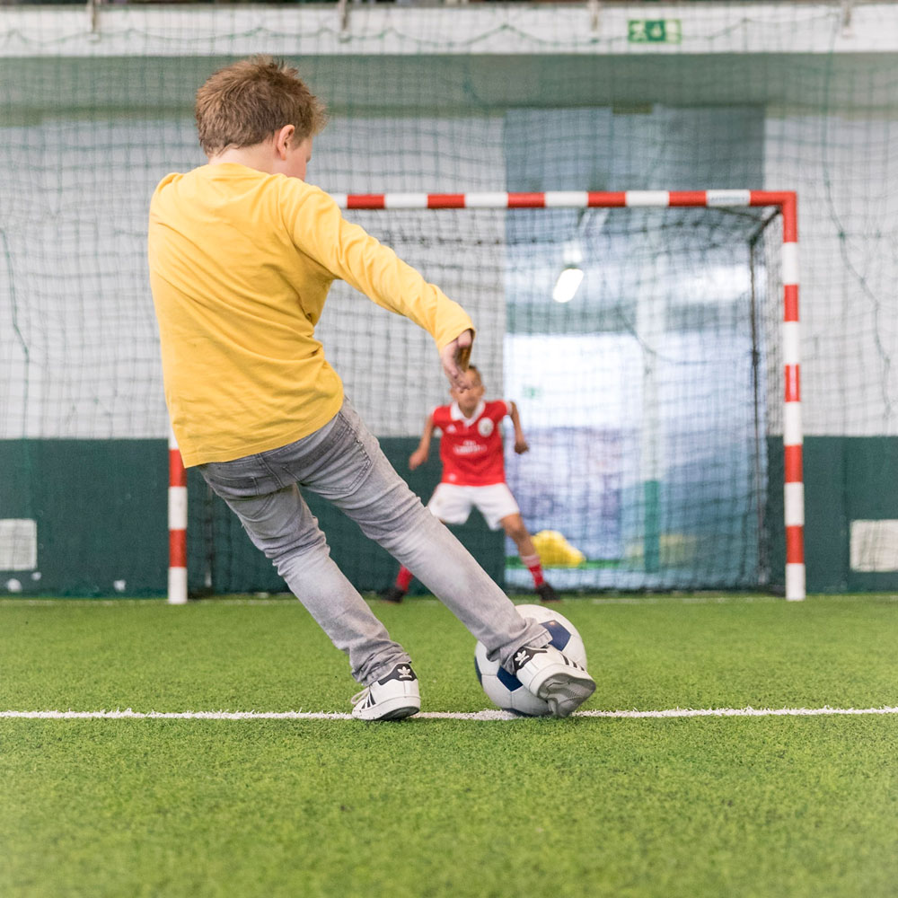
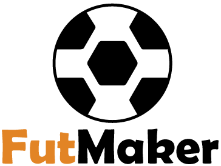
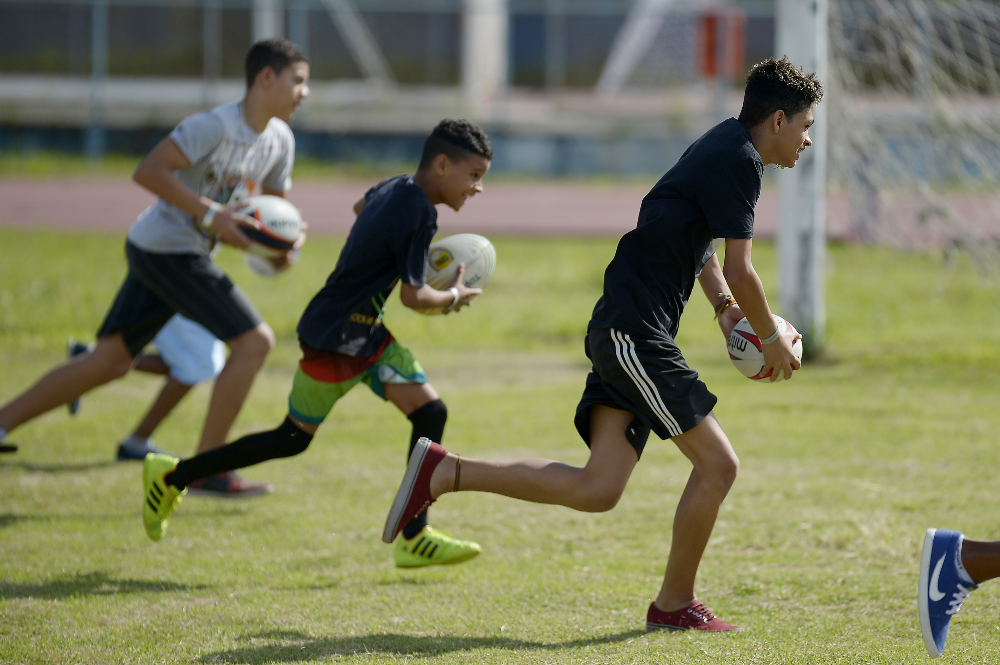
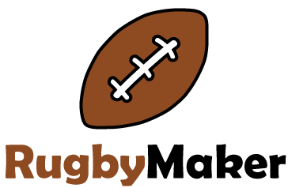

Bem-vindo à SportsMaker!
Somos uma empresa especializada na organização de eventos desportivos para estudantes, com foco em torneios de Basquetebol,
Futebol e Rugby. A nossa missão é proporcionar experiências competitivas e divertidas, promovendo o espírito de equipa,
a competição saudável e, claro, a paixão pelo desporto.
Os nossos torneios decorrem em escolas e oferecem aos participantes a oportunidade de demonstrarem as suas habilidades e de
representarem as suas equipas. Este ano, todos os eventos terão lugar na escola EPCI, com dias específicos para cada modalidade.
As equipas vencedoras não só ganham reconhecimento, mas também prémios especiais!
Explora o nosso site para conheceres os próximos torneios, consultares o regulamento. Vem fazer parte desta aventura e vive o
desporto connosco!
Torneio de Basquetebol - Mostra as Tuas Habilidades em Campo!
 Prepara-te para o nosso emocionante torneio de basquetebol, que se realizará no dia 11 de outubro, às 11:00 horas!
Este evento destina-se a todas as equipas que queiram competir e mostrar o seu talento em campo. Cada equipa será
composta por 5 jogadores, prontos para dar o seu melhor em partidas repletas de energia e emoção.
Os jogos serão disputados até aos 21 pontos, garantindo um ritmo dinâmico e competitivo. Cada cesto conta, por isso
prepara a tua equipa e treina as tuas jogadas para alcançares a vitória!
A equipa vencedora levará para casa não só o título de campeã do torneio, mas também um prémio especial: bilhetes
para assistir ao filme "Space Jam" no cinema! Um verdadeiro clássico de basquetebol, perfeito para todos os amantes
deste desporto.
Vem fazer parte desta experiência e mostra-nos que a tua equipa é a melhor em campo!
Torneio de Futebol - Mostra a Tua Paixão pelo Jogo!
 Preparados para um dia emocionante? O nosso torneio de futebol irá decorrer no dia 12 de outubro, às 11:00 horas! Este evento destina-se a
todas as equipas que queiram competir e mostrar o seu talento em campo. Teremos 11 equipas, cada uma composta por 11 jogadores, prontas
para dar o seu melhor em partidas vibrantes.
Os jogos terão a duração de 30 minutos, proporcionando um ritmo intenso e dinâmico. Cada minuto conta, por isso prepara a tua equipa e treina
as tuas jogadas para alcançares a vitória!
A equipa vencedora não só levará para casa o título de campeã do torneio, mas também um prémio especial: uma t-shirt do Al Nassr, do
Cristiano Ronaldo, para cada membro da equipa vencedora! Uma lembrança perfeita para todos os fãs de futebol.
Vem fazer parte desta experiência e mostra-nos que a tua equipa é a melhor em campo!
Torneio de Rugby - Mostra a Tua Força em Campo!
 Estás pronto para um desafio emocionante? O nosso torneio de rugby irá decorrer no dia 12 de outubro, às 11:00 horas!
Este evento é destinado a todas as equipas que queiram competir e mostrar a sua força e habilidades em campo.
Cada equipa será composta por 7 jogadores, prontos para dar o seu melhor em partidas intensas.
Os jogos terão a duração de 30 minutos, proporcionando um ritmo dinâmico e emocionante. Cada segundo conta, por isso
prepara a tua equipa e treina as tuas jogadas para alcançares a vitória!
A equipa vencedora não só levará para casa o título de campeã do torneio, mas também um prémio especial: uma nova bola
de rugby para cada jogador da equipa vencedora! Uma excelente adição para o teu treino e jogos futuros.
Vem fazer parte desta experiência e mostra-nos que a tua equipa é a melhor em campo!
Informação - Contacta-nos!
Para qualquer dúvida ou informação adicional sobre os nossos torneios e eventos, não hesites em entrar em
contacto connosco.
Estamos disponíveis para ajudar!
Email: geral@sportsmaker.pt
Telefone: 21 02 45 579
Agradecemos o teu interesse e esperamos ver-te em breve nos nossos eventos desportivos!